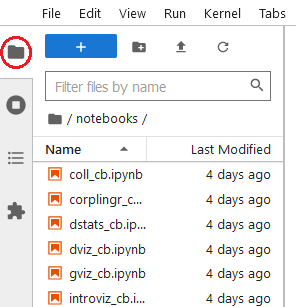
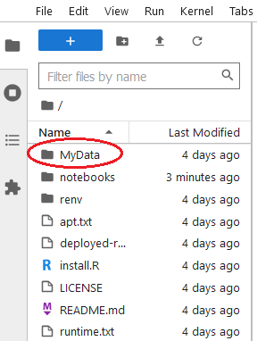
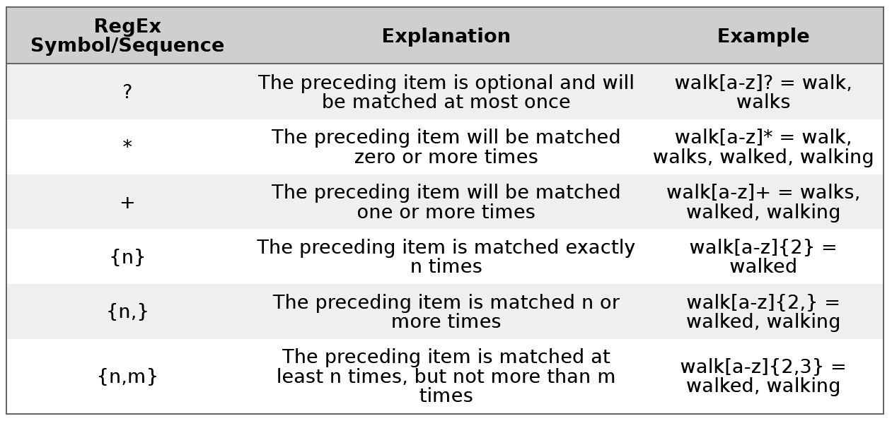
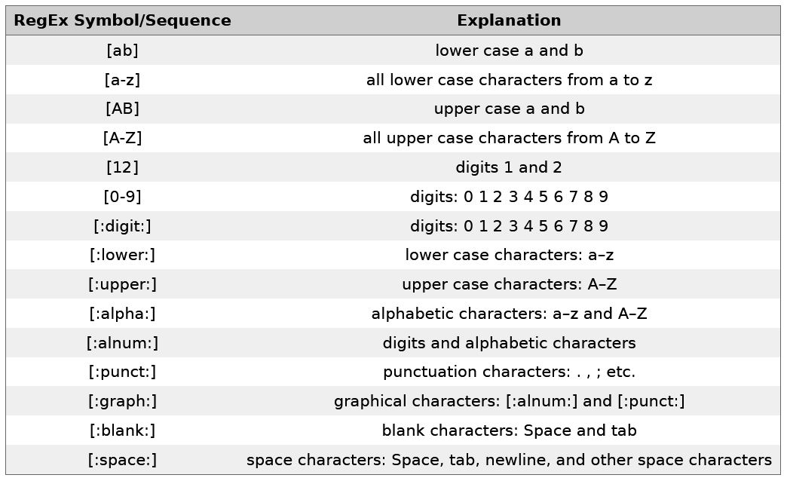
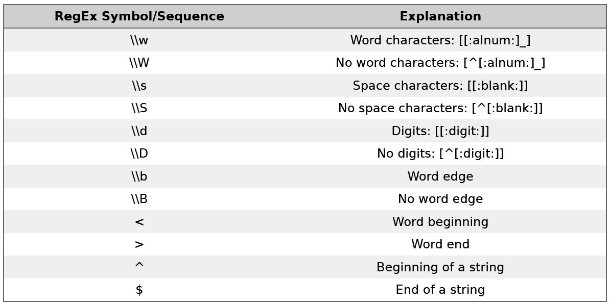

library(dplyr)
library(stringr)
library(htmlwidgets)
This tutorial is the interactive Jupyter notebook accompanying the Language Technology and Data Analysis Laboratory (LADAL) tutorial Regular Expressions in R.
Preparation and session set up
We set up our session by activating the packages we need for this tutorial.
Once you have initiated the session by executing the code shown above, you are good to go.
If you are using this notebook on your own computer and you have not already installed the R packages listed above, you need to install them. You can install them by replacing the library command with install.packages and putting the name of the package into quotation marks like this: install.packages("dplyr"). Then, you simply run this command and R will install the package you specified.
Getting started with Regular Expressions
To put regular expressions into practice, we need some text that we will perform out searches on. In this tutorial, we will use texts from wikipedia about grammar.
# read in first text
text1 <- readLines("notebooks/regex_cb/data/testcorpus/linguistics02.txt")
et <- paste(text1, sep = " ", collapse = " ")
# inspect example text
et[1] "Grammar is a system of rules which governs the production and use of utterances in a given language. These rules apply to sound as well as meaning, and include componential subsets of rules, such as those pertaining to phonology (the organisation of phonetic sound systems), morphology (the formation and composition of words), and syntax (the formation and composition of phrases and sentences). Many modern theories that deal with the principles of grammar are based on Noam Chomsky's framework of generative linguistics."In addition, we will split the example text into words to have another resource we can use to understand regular expressions
# split example text
set <- str_split(et, " ") %>%
unlist()
# inspect
head(set)[1] "Grammar" "is" "a" "system" "of" "rules" Using your own data
While the tutorial uses data from the LADAL website, you can also use your own data. You can see below what you need to do to upload and use your own data.
The code chunk below allows you to upload two files from your own computer. To be able to load your own data, you need to click on the folder symbol to the left of the screen:
Then, when the menu has unfolded, click on the smaller folder symbol (encircled in red in the picture below).

Now, you are in the main menu and can click on the ‘MyData’ folder.

Now, that you are in the MyData folder, you can click on the upload symbol.
Select and upload the files you want to analyze (IMPORTANT: here, we assume that you upload some form of text data - not tabular data! You can upload only txt and docx files!). When you then execute the code chunk below, you will upload your own data and you can then use it in this notebook.
myfiles <- list.files(here::here("MyData"), # path to the corpus data
# full paths - not just the names of the files
full.names = T
)
# load colt files
mytext <- sapply(myfiles, function(x) {
x <- scan(x,
what = "char",
sep = "",
quote = "",
quiet = T,
skipNul = T
)
x <- paste0(x, sep = " ", collapse = " ")
x <- stringr::str_squish(x)
})
# inspect
str(mytext) Named list()Keep in mind though that you need to adapt the names of the texts in the code chunks below so that the code below work on your own texts!
Before we delve into using regular expressions, we will have a look at the regular expressions that can be used in R and also check what they stand for.
There are three basic types of regular expressions:
regular expressions that stand for individual symbols and determine frequencies
regular expressions that stand for classes of symbols
regular expressions that stand for structural properties
The regular expressions below show the first type of regular expressions, i.e. regular expressions that stand for individual symbols and determine frequencies.

The regular expressions below show the second type of regular expressions, i.e. regular expressions that stand for classes of symbols.

The regular expressions that denote classes of symbols are enclosed in [] and :. The last type of regular expressions, i.e. regular expressions that stand for structural properties are shown below.

Practice
In this section, we will explore how to use regular expressions. At the end, we will go through some exercises to help you understand how you can best utilize regular expressions.
Show all words in the split example text that contain a or n.
set[str_detect(set, "[an]")] [1] "Grammar" "a" "governs" "production" "and"
[6] "utterances" "in" "a" "given" "language."
[11] "apply" "sound" "as" "as" "meaning,"
[16] "and" "include" "componential" "as" "pertaining"
[21] "phonology" "organisation" "phonetic" "sound" "formation"
[26] "and" "composition" "and" "syntax" "formation"
[31] "and" "composition" "phrases" "and" "sentences)."
[36] "Many" "modern" "that" "deal" "principles"
[41] "grammar" "are" "based" "on" "Noam"
[46] "framework" "generative" "linguistics."Show all words in the split example text that begin with a lower case a.
set[str_detect(set, "^a")] [1] "a" "and" "a" "apply" "as" "as" "and" "as" "and"
[10] "and" "and" "and" "are" Show all words in the split example text that end in a lower case s.
set[str_detect(set, "s$")] [1] "is" "rules" "governs" "utterances" "rules"
[6] "as" "as" "subsets" "as" "phrases"
[11] "theories" "principles" "Chomsky's" Show all words in the split example text in which there is an e, then any other character, and than another n.
set[str_detect(set, "e.n")][1] "governs" "meaning," "modern" Show all words in the split example text in which there is an e, then two other characters, and than another n.
set[str_detect(set, "e.{2,2}n")][1] "utterances"Show all words that consist of exactly three alphabetical characters in the split example text.
set[str_detect(set, "^[:alpha:]{3,3}$")] [1] "the" "and" "use" "and" "and" "and" "and" "and" "the" "are"Show all words that consist of six or more alphabetical characters in the split example text.
set[str_detect(set, "^[:alpha:]{6,}$")] [1] "Grammar" "system" "governs" "production" "utterances"
[6] "include" "componential" "subsets" "pertaining" "phonology"
[11] "organisation" "phonetic" "morphology" "formation" "composition"
[16] "syntax" "formation" "composition" "phrases" "modern"
[21] "theories" "principles" "grammar" "framework" "generative" Replace all lower case as with upper case Es in the example text.
str_replace_all(et, "a", "E")[1] "GrEmmEr is E system of rules which governs the production End use of utterEnces in E given lEnguEge. These rules Epply to sound Es well Es meEning, End include componentiEl subsets of rules, such Es those pertEining to phonology (the orgEnisEtion of phonetic sound systems), morphology (the formEtion End composition of words), End syntEx (the formEtion End composition of phrEses End sentences). MEny modern theories thEt deEl with the principles of grEmmEr Ere bEsed on NoEm Chomsky's frEmework of generEtive linguistics."Remove all non-alphabetical characters in the split example text.
str_remove_all(set, "\\W") [1] "Grammar" "is" "a" "system" "of"
[6] "rules" "which" "governs" "the" "production"
[11] "and" "use" "of" "utterances" "in"
[16] "a" "given" "language" "These" "rules"
[21] "apply" "to" "sound" "as" "well"
[26] "as" "meaning" "and" "include" "componential"
[31] "subsets" "of" "rules" "such" "as"
[36] "those" "pertaining" "to" "phonology" "the"
[41] "organisation" "of" "phonetic" "sound" "systems"
[46] "morphology" "the" "formation" "and" "composition"
[51] "of" "words" "and" "syntax" "the"
[56] "formation" "and" "composition" "of" "phrases"
[61] "and" "sentences" "Many" "modern" "theories"
[66] "that" "deal" "with" "the" "principles"
[71] "of" "grammar" "are" "based" "on"
[76] "Noam" "Chomskys" "framework" "of" "generative"
[81] "linguistics" Remove all white spaces in the example text.
str_remove_all(et, " ")[1] "Grammarisasystemofruleswhichgovernstheproductionanduseofutterancesinagivenlanguage.Theserulesapplytosoundaswellasmeaning,andincludecomponentialsubsetsofrules,suchasthosepertainingtophonology(theorganisationofphoneticsoundsystems),morphology(theformationandcompositionofwords),andsyntax(theformationandcompositionofphrasesandsentences).ManymoderntheoriesthatdealwiththeprinciplesofgrammararebasedonNoamChomsky'sframeworkofgenerativelinguistics."